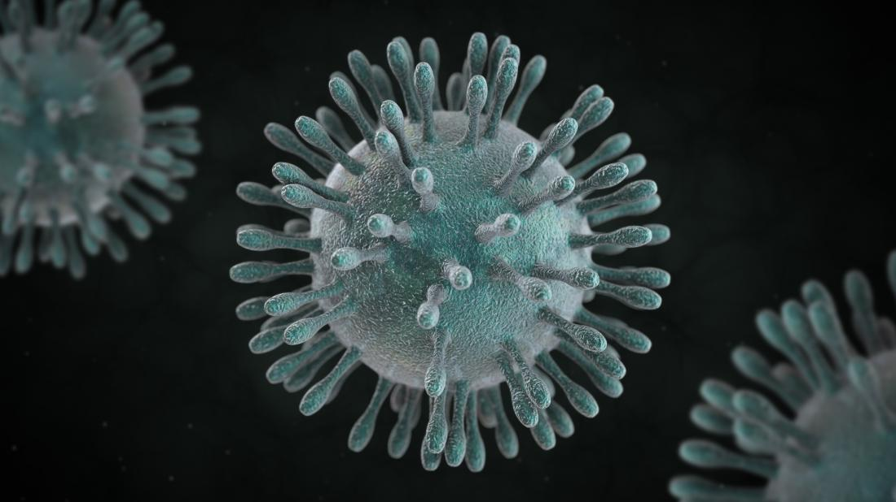

Corona virus is a group of viruses that cause diseases in mammals and birds.It consists of many viruses such as:229E,SARS,MERS,nCOV.The name of this virus is given to it according to it's shape.It has got sharp,long hair like structure by which it looks like a crown.
.And crown is called "corona" in latin language.If you think corona virus is discovered recently then you are wrong.Corona virus was first discovered in 1960s.The most dangerous corona viruses are:SARS(Serve acute respiratory syndrome) and MERS(Middle east respiratory syndrome).These virus has taken a total of 1500 lives.The most shocking thing is that the SARS virus was first found in china.